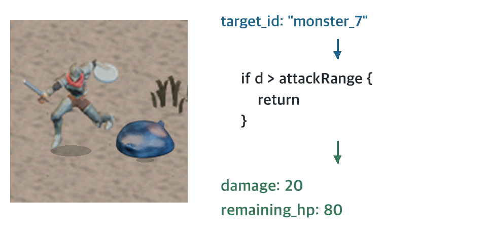
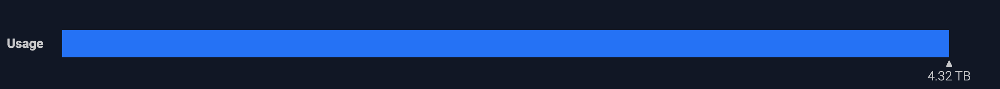

예전에 혼자 만든 MMORPG에 외국인 들어오길래 번역기까지 붙여버림 썼던 개발자 아재임.
개붕이들이 많이 플레이해주고 피드백도 줘서, 게임 만들면서 있었던 일이랑 근황을 계속 올리려고 했었음. 근데 최근에 너무 홍보글만 쓴다는 얘기를 듣고 다시 보니 게임 소개에 치우친 글이 많았더라. 좀 반성이 되었고 이번엔 그간 댓글로 질문받았던 것들을 정리해보고자 함.
나도 전공자는 아니고 야매로 독학하면서 만든 거라 틀린 부분이 있을 수 있음. 그냥 “얘는 자기 게임에서 이렇게 했구나” 정도로 참고해주면 될듯. 혹시 업으로 하는 개붕이가 틀린 부분 지적해준다면 고맙겠음. 내가 만드는 모닥 온라인 화면이랑 캐릭터로 설명해보겠음.
게임 서버라고 하면 보통 서버 안에서 게임이 돌아가고 우리는 거기 접속해서 캐릭터 하나씩 움직이는 느낌인데 실제로 서버가 보내주는 건 이렇게 생겼음.
우리가 캐릭터로 인지하는 것도 서버에서 보면 이런 영어와 숫자로 된 데이터 덩어리임.
누가 어디 있고, 체력이 얼마고, 지금 뭘 하고 있는지 이런 값들임. 우리가 실행하는 게임 프로그램을 클라이언트라고 부르는데, 얘가 갖고 있던 캐릭터랑 건물 그림을 꺼내서 저 숫자에 맞춰 화면에 그리는 거임
서버는 클라이언트가 어떤 그림을 쓰는지 신경 쓸 필요가 없음. 이미지를 그리는 대신 좌표, 체력, 이동이나 공격 같은 데이터를 빠르게 계산하는 데 집중함. 외형만 다른 스킨이 100개 추가돼도 서버의 이동·전투 계산이 늘어나는 건 아님. 늘어나는 건 클라이언트 프로그램의 용량임. 내가 누른 키나 이동 목표를 서버에 보내는 것도 클라이언트가 함
이렇게 화면을 그렸으면, 이제 캐릭터가 움직이고 싸울 때는 어떤 데이터가 오가는지 봐보면
위는 게임 플레이 화면이고 아래는 일반 플레이의 송수신 구조임. 왼쪽이 보내는 명령, 오른쪽이 받는 데이터.
이동할 곳을 찍으면 world:goal, 공격 대상을 고르면 combat:target, 스킬을 누르면 combat:skill을 보냄. 서버에서는 좌표랑 타격 결과, 남은 체력 같은 게 계속 돌아오고.
만약 내가 “보스한테 100만 데미지 넣었으니까 한 방에 잡았음” 하고 보냈는데 서버가 그냥 받아주면 게임이 난장판이 될 거임.
그래서 내가 보내는 건 “이놈 공격할게”라는 요청이고 서버가 가능한지 확인함. 위 코드는 거리가 사거리보다 멀면 그 공격 처리를 중단한다는 뜻임. 때릴 수 있으면 피해를 계산해서 “20 맞았고 체력 80 남음” 하고 알려줌.

이렇게 서버가 최종 판정을 맡는 구조를 Authoritative Server라고 부름.
장점은 내 컴퓨터에서 공격력이나 체력을 맘대로 고쳐도 서버가 그대로 인정해주지 않는다는 거임. 이런 식의 핵을 막기 좋음. 대신 서버가 이동, 전투, 각종 규칙까지 챙겨야 하니 사람이 늘면 계산 부담도 커지고 그만큼 서버 성능도 필요함.
이제 게임이 어떻게 돌아가는지 봤으니 렉 얘기를 해보자.
게임하다 보면 핑이 높네, 핑이 구리네 하는데 이 핑이 뭘까. 서버에 신호를 보내고 답이 돌아오기까지 걸린 시간임. 100ms면 갔다 오는 데 0.1초 걸렸다는 뜻.
그럼 핑이 100ms면 서버가 처리한 결과도 0.1초 만에 받을까? 그걸 보려면 서버가 언제 계산하고 언제 결과를 보내는지도 봐야 됨.
모닥 서버는 1초에 20번씩 게임 속 상황을 계산함. 누가 어디로 움직였는지, 공격할 거리에 들어왔는지, 체력이 얼마나 남았는지 확인하는 거임. 한 번 계산하고 다음 계산까지 간격이 0.05초, 즉 50ms임. 이 계산 한 차례를 틱이라고 부름.
예를 들어 몬스터가 나를 쫓아오고 있는데, 서버가 1초에 4번만 계산한다면 0.25초 간격으로 이동과 공격 가능 여부를 확인하게 됨. 내가 도망가라는 입력을 보내도 다음 계산 차례까지 기다리는 시간이 길어질 수 있음. 20번 계산하면 그 간격이 0.05초라 더 자주 확인할 수 있고.
그런데 이렇게 계산한 위치랑 체력을 사람들한테 알려주는 건 1초에 4번임. 계산할 때마다 전부 보내면 통신량도 늘어나니까, 게임 속 상황은 촘촘하게 계산하고 현재 상태는 간격을 두고 보내는 거임.
위 점 하나가 계산 한 번임. 대략 다섯 번 계산하는 동안 현재 상태를 한 번 찍어 보내는데 이걸 스냅샷이라고 부름.
다만 맞았다거나 스킬을 썼다는 소식은 이 스냅샷과 별도로 더 자주 보냄. 전투 반응까지 기다리게 하면 답답하니까.
내가 “x 200으로 갈게” 하고 보내면, 위 그림에서는 가는 데 50ms가 걸리고 다음 계산 차례인 100ms 틱에서 처리함. 처음 위치는 x 100이었는데, 처리 후 틱마다 105, 110, 115, 120으로 조금씩 이동함. 250ms에 그때 위치인 120을 보내고, 돌아오는 데 50ms가 더 걸려 내 컴퓨터가 300ms에 받음.
목적지는 200이어도 아직 가는 중이니 돌아온 위치는 120일 수 있음. 핑이 100ms여도 계산 차례와 전송 차례를 기다리는 시간이 더 붙는 거임.
계산 자체가 밀릴 수도 있음. 50ms마다 해야 하는 일을 80ms 걸려서 하고 있으면 다음 일도 늦어짐. 핑은 낮아도 서버의 게임 계산이 밀리거나 내 컴퓨터가 화면을 늦게 그리면 버벅일 수 있음.
사용자가 느끼는 렉은 이렇게 여러 단계에서 생길 수 있음. 그래서 유저가 렉 걸린다고 하면 나는 클라이언트가 화면을 늦게 그리는 건지, 통신이 느린 건지, 서버가 틱 처리를 제때 못 하는 건지 다 체크해봐야 되는 거임.
그리고 이 렉이라 불리는거에는 사용자가 느끼는 클라이언트도 포함되는데
처음에 얘기한 순간이동도 이런 경우임. 내 캐릭터는 움직이는데 옆 사람은 마지막으로 받은 위치에 남아 있음.
그러다 최신 좌표를 받았는데 지금 그려둔 위치랑 너무 멀면 한 번에 맞춰버릴 수 있음. 우리 눈엔 갑자기 순간이동한 것처럼 보이는 거지. 화면에서 서 있었다고 서버에서도 계속 그 자리에 서 있었던 건 아닐 수 있음.
이런 끊김을 조금 덜 느끼게 해주는 방법도 있음. 통신을 빠르게 만드는 건 아니고, 데이터가 오는 사이를 클라이언트가 자연스럽게 그려주는 일종의 눈속임임.
내 캐릭터는 내가 누른 입력을 아니까 서버 답장을 기다리는 동안에도 먼저 움직여 보여주고, 나중에 온 서버 결과랑 맞춤. 이게 예측과 보정임.
남의 캐릭터는 다음에 무슨 키를 누를지 모르니까, 받아둔 위치 사이를 이어서 보여줌. 100에 있다가 120에 있었다면 그 사이를 105, 110, 115처럼 채워서 움직이게 그리는 거임. 이걸 Interpolation이라고 함.
최신 위치 이후로도 잠깐 데이터가 안 오면, 가던 방향과 속도로 조금 더 움직일 거라고 예상해서 그리기도 함. 이걸 Extrapolation이라고 부름. 아래는 이 짧은 구간을 느리게 보여준 거임. X인 동안에도 움직이다가 O가 되면 새 좌표와 차이를 맞춤. 오래 끊겨도 계속 맞힐 수 있는 건 아니라서 예상해서 움직이는 시간에는 제한을 둠.
위 Raw에서는 둘 다 서버에서 받은 좌표로만 그려서 뚝뚝 움직임.
그래서 궁수에게 Interpolation을 적용해서 받아둔 위치 사이를 부드럽게 잇고, 기사에게는 Extrapolation까지 더했음. 기사는 X인 동안에도 Predict 화살표 방향으로 잠깐 더 움직이다가, 새 데이터를 받으면 O로 바뀌고 Sync!가 뜨면서 위치 차이를 맞추는 거임.
다음은 서버 비용 얘기임. 사람이 늘어나면 서버에서 보내는 데이터도 늘어나는데, 이게 비용으로 이어짐. 모닥불 주변에 사람들이 모여 있다고 해보자.
새 사람 정보를 기존 사람들한테 보내고, 새 사람한테도 기존 사람들 정보를 보내야 됨. 전부의 상태를 전부한테 보내는 구조면 사람이 늘 때 보내는 양은 더 빠르게 늘어남.
한 사람 상태가 100바이트라고 치면, 100명분을 100명한테 초당 4번 보내는 건 초당 약 4MB임. 같은 조건에서 10명이면 0.04MB. 사람은 10배인데 보내는 양은 100배가 되는 거.
전투 결과는 한 번 계산해서 같이 쓰더라도, 그 결과를 전달할 상대는 계속 늘어나는 거임.
모닥은 보통 한 달에 5TB 정도 씀. 아래는 이번 달 26일까지인데 4.32TB 찍혀 있음.

대부분 서버에서 유저한테 보내는 아웃바운드 트래픽임. 위 전투 움짤에서도 명령 보내는 쪽보다 받는 쪽 데이터가 계속 내려왔잖아. “여기로 갈래”는 짧게 보내도 서버는 주변 사람이며 몬스터며 계속 알려줘야 하니까.
이거 보내는 것도 돈임. 기본 요금에 일정량 포함돼 있기도 하고, 넘어가면 추가 요금이 붙기도 함.
예를 들어 AWS 미국 동부 EC2의 일반 인터넷 송신은 첫 구간이 GB당 0.09달러에 월 100GB 무료라서, 5TB 안팎을 보내면 전송료만 대략 400~450달러 수준임.
그래서 서버 고를 때 CPU랑 메모리만 볼 게 아니라 포함 트래픽이랑 초과 요금도 봐야 됨. 게임에서도 굳이 보낼 필요 없는 건 줄여야 하고.
간단하게 쓰려고 했는데 쓰다보니 분량조절을 실패함;; 긴 글 읽어줘서 고맙고 모닥 온라인 많이 지켜봐줘.


미드개발자 인정받는거야? 뿌듯하군